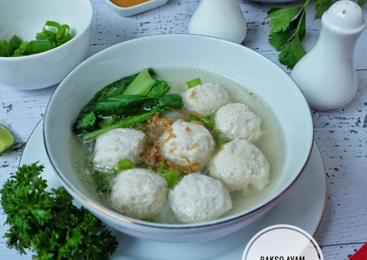

Bukannya saya anti dengan bakso yg beredar diluaran, atau bakso yg digiling dipasar, tapi kalau bisa bikin bakso sendiri dirumah dengan bahan yang fresh, prosesnya bersih, sehat karena bebas bahan pengenyal, pemutih & pengawet kenapa harus beli? saya pilih bikin bakso sendiri aja deh, baik itu bakso daging sapi ataupun bakso ayam, selain hemat, makannya puas dan gak pake was-was 😊
Ikuti petunjuk pembuatan sesuai yang saya tulis, insyaAllah anti gagal dan hasil baksonya benar2 sedap.
Bahan-bahan untuk membuat Bakso Ayam:
- -1 kg dada ayam tanpa kulit & tulang
- -4 siung bawang putih
- -6 sendok makan air es yg dingin sekali
- -6-8 sendok makan tepung sagu/ kanji
- -3 butir putih telur
- -1 sachet kecil ladaku merica bubuk
- -Secukupnya garam
Bahan kuah bakso:
- -2 liter air kaldu ayam
- -2 batang bawang daun
- -1 buah kaldu blok rasa ayam (optional)
- -1/2 sendok makan bawang putih goreng
- -Secukupnya gula & garam
Bumbu yg dihaluskan:
- -5 siung bawang putih
- -1/2 sendok makan merica butiran
- -1/4 buah pala
Pelengkap:
- -Soun
- -sawi
- -seledri
- -sambal rawit
Langkah-langkah:
- 1.Cuci bersih daging ayam, potong2 lalu bekukan dalam freezer minimal 6 jam
- 2.Masukkan daging ayam yg sudah beku dalam cooper/food processor, tambahkan bawang putih utuh & air es, proses sampai halus agar menghasilkan bakso yg lembut. Tuang kedalam baskom, tambahkan sagu & putih telur, garam & lada, uleni sampai rata.
- 3.Panaskan air dalam panci besar sampai mendidih,matikan api,lalu bentuk bakso dg bantuan tangan & sendok,bentuk bulat serapi mungkin sampai adonan habis,hidupkan kembali api lalu masak bakso sampai matang (mengapung), angkat bakso lalu masukkan dlm wadah berisi air es/air diberi es batu, yg tujuannya membuat bakso kenyal & lembut. Angkat bakso dari air es,tiriskan.
- 4.Kuah bakso: Tumis bumbu halus sampai wangi,masukkan dalam air kaldu ayam,masak dengan api kecil,bumbui garam,merica,kaldu blok rasa ayam (optional) & gula,tes rasa,bila sudah pas tambahkan bawang putih goreng & daun bawang,kuah bakso siap digunakan.
- 5.Penyelesaian: tata soun & sawi rebus dalam mangkuk, tuangi bakso & kuah, sajikan dengan pelengkap.